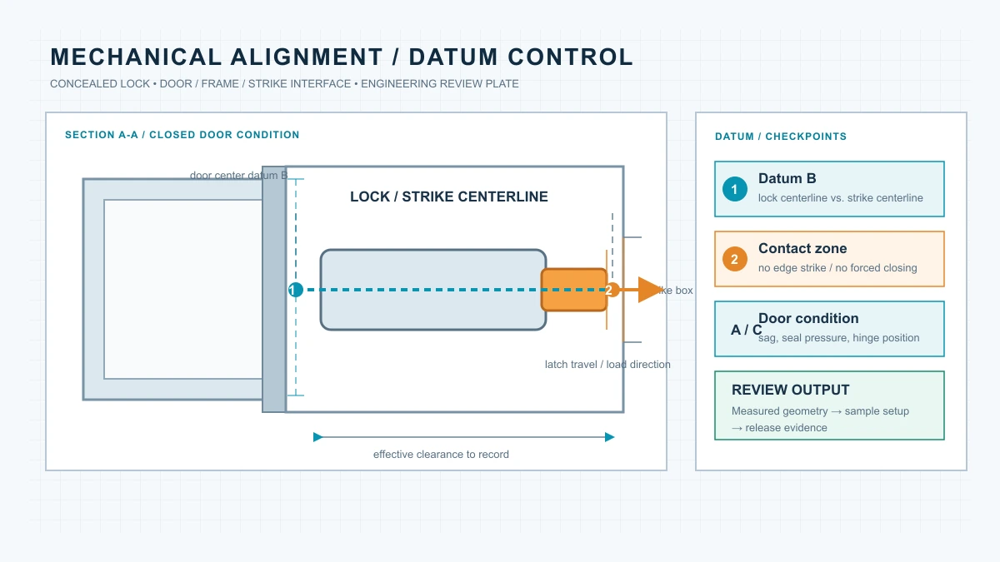
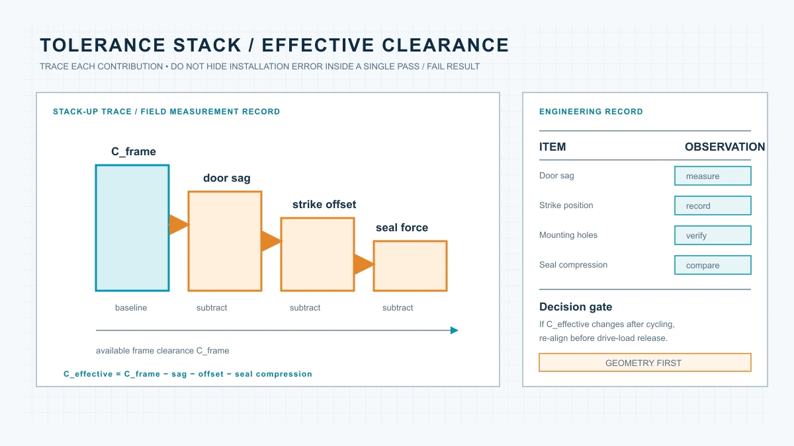
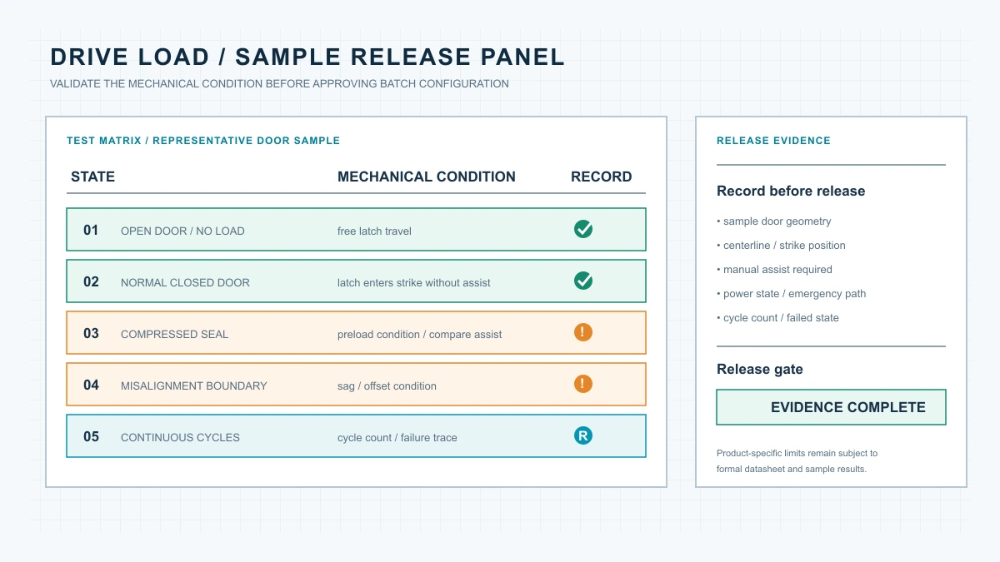

这篇文章解决一个具体问题：隐形锁装进门体后，为什么仍可能出现关门顶锁、锁舌回收困难或电机负载过高。按图先量门体和锁扣，再把样机动作、边界状态和循环结果写进放行记录。
隐形智能锁“能装进门体”并不等于“能稳定工作”。锁体中心线、锁扣盒位置、门扇下垂、密封条预压力和安装误差都会改变锁舌的实际阻力。项目交付前，应把门体测量、样机动作和批量放行记录放在同一条验证链路中。
目录
1. 先确认五个关键几何关系
1.1 锁体中心线
首先应确认锁体中心线与门框锁扣盒中心线是否一致。需要记录门扇厚度、锁体安装高度、锁舌中心线到门边的距离、门框锁扣盒中心线、门扇关闭后的左右偏移，以及门体开启方向和铰链位置。
中心线误差不一定会在开门状态下暴露。门扇打开时，锁舌没有受到门框约束，驱动机构可能看起来运行正常；只有在完全闭门后，偏移才会转化为额外阻力。
1.2 锁舌进入深度
锁舌或锁栓需要在门扇完全闭合后顺利进入锁扣盒，并且不能持续顶住锁扣盒边缘。工程记录中应区分：锁舌是否能够进入锁扣盒、进入后是否仍有侧向摩擦、锁舌端部是否撞击锁扣盒底部、门扇是否需要额外推压才能完成上锁，以及解锁时是否需要门扇先释放预压力。
如果必须持续推门或拉门才能完成上锁或解锁，说明问题可能不在电子控制系统，而在门体几何关系或锁扣盒位置。
1.3 门扇下垂和铰链偏移
多扇门、厚重门和长期高频使用的门体，可能出现轻微下垂。即使初始安装时中心线一致，使用一段时间后也可能出现锁舌中心线低于锁扣盒、门扇关闭时需要抬门、门框上下间隙发生变化，或锁舌在一个方向上持续摩擦。
因此，样机测试不能只测一次。建议在安装初始、连续循环后和重新调整门铰链后分别记录中心线状态。
1.4 密封条压缩量
酒店、公寓和防火门项目常见密封条或门框胶条。密封条压缩后会对门扇产生回弹力，使锁舌进入锁扣盒时的阻力增加。
需要分别测试无密封条压缩、正常闭门、密封条完全压紧，以及门扇被轻微推入后的状态。如果只有在强行推门时才能完成锁定，项目团队就需要重新确认锁扣盒位置、密封条规格或门扇闭合压力。
1.5 维护空间
隐形锁并不是安装完成后永远不需要接触。电池、控制模块、紧急供电位置和机械应急结构都需要维护空间。在门体测量阶段，应同时标记电池更换方向、盖板拆卸方向、螺丝工具进入空间、线束弯折半径，以及紧急供电或机械钥匙操作空间。
2. 建立锁体到门框的机械力链
驱动机构面对的不是单一阻力，而是锁舌与锁扣盒摩擦、密封条回弹力、门扇偏移、锁体内部传动阻力和安装误差的叠加。可用以下关系理解趋势：
对于电机驱动系统，可用  理解阻力、力臂和传动效率之间的关系。该公式不替代具体扭矩测试，最终判断应以样机和正式技术文件为准。
理解阻力、力臂和传动效率之间的关系。该公式不替代具体扭矩测试，最终判断应以样机和正式技术文件为准。

3. 用容差叠加判断安装风险
门体下垂、锁扣盒偏移、安装孔误差和密封条压缩单独看可能很小，但叠加后会把锁舌从“顺畅进入”推向“边缘摩擦”。可使用：

| 测量项目 | 初始值 | 样机安装后 | 循环测试后 |
|---|---|---|---|
| 门体厚度（示例） | 45 mm | 45 mm | 45 mm |
| 锁体与锁扣盒中心线（示例） | 一致 | 偏差 1 mm | 偏差 2 mm |
| 锁舌进入深度（示例） | 18 mm | 17 mm | 16 mm |
| 密封条压缩状态（示例） | 未压缩 | 正常压缩 | 压缩增大 |
4. 设计样机驱动负载测试
测试应分为四个状态：开门空载、正常闭门、密封条压紧或其他高阻力边界、轻微偏移状态。记录动作是否一次完成、锁舌是否完全回收、是否需要人工推压、声音是否变大以及电池状态是否影响动作。
连续循环测试还要记录循环次数、失败次数、失败时门体状态、是否人工干预，以及调整前后的差异。偶发失败不能只靠重启或换电池消除，应回到锁舌、锁扣盒、门扇和密封条的机械关系中查找原因。
5. WF-019 与 WF-026 的验证重点
WF-019：验证部署简洁性
现有资料显示 WF-019 使用 2 节 AA 电池，并以 433 MHz 远程控制为基础配置。项目应重点确认门体空间、中心线稳定性、电池维护、真实现场控制距离，以及指纹、密码、NFC 或 App 模块是否已写入报价和样机配置。
WF-026：验证冗余结构与完整力链
现有资料显示 WF-026 采用双系统、双电机结构并配置 Grade C 机械锁芯。除门体几何外，还要分别记录两套驱动、机械干涉、电池责任、应急解锁和单系统异常状态。双系统不能消除门体偏移和锁扣盒摩擦。

6. 把结果写入 RFQ 和样机放行文件
RFQ 和样机确认文件至少应包含门体材质、厚度、开启方向、铰链、密封条、现有锁体和锁扣盒尺寸，以及锁体位置、中心线、维护空间、应急解锁、线束位置和测试记录。
建议将“样机可运行”改写为可验证条件：样机在代表性门体上安装后，锁舌能够在无持续人工推拉的情况下完成上锁和解锁，并且测试结果、调整项、维护空间和应急操作均已记录。
7. 结论：先验证门体，再确认批量配置
可靠顺序是：测量门体和门框，确认中心线，检查锁舌路径，评估密封条和门扇偏移，完成空载与闭门测试，再进行边界状态和连续循环测试，最后把结果写入样机放行和批量交付文件。
对于 WF-019、WF-026 或其他 OEM/ODM 配置，具体参数仍应以正式技术资料和样机结果为准。门体几何、驱动负载、维护空间和应急操作全部验证后，批量采购才具备可控基础。